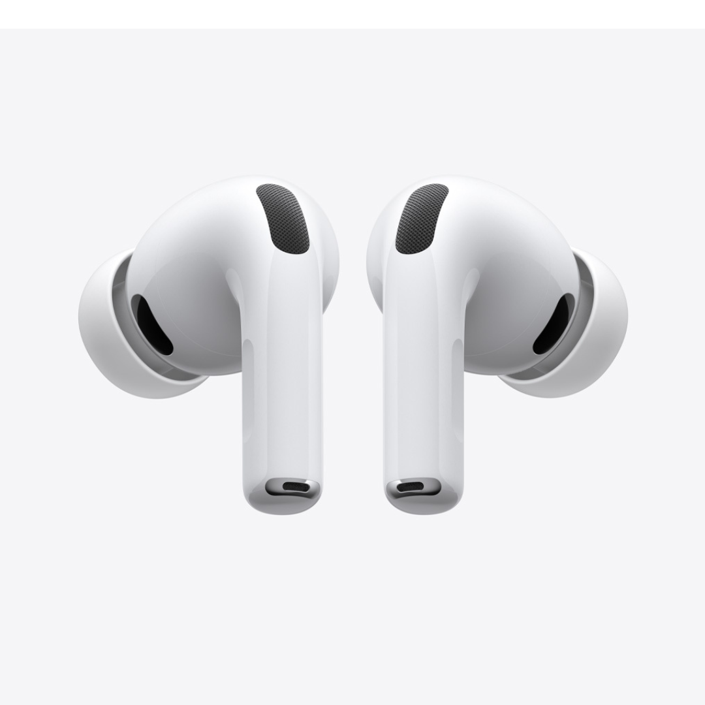

.png)
AirPods Pro 3
O melhor Cancelamento Ativo de Ruído do mundo em fones intra-auriculares.
R$ 224,92/mês ou R$ 2.699*
Informacões do produto
AirPods Pro 3
Experimente uma qualidade de som como você nunca ouviu, com o Cancelamento Ativo de Ruído.
A medição de frequência cardíaca integrada permite acompanhar seus batimentos e calorias queimadas durante exercícios.
E os AirPods Pro 3 trazem avanços em saúde auditiva.
A Tradução ao Vivo usa a Apple Intelligence para você se comunicar em outros idiomas.
Os seguintes idiomas são compatíveis: português (Brasil), chinês (mandarim, simplificado), chinês (mandarim, tradicional), inglês (Reino Unido, EUA),
francês (França), alemão (Alemanha), italiano (Itália), japonês (Japão), coreano (Coreia do Sul) e espanhol (Espanha).
A arquitetura interna foi completamente recriada para melhorar o desempenho acústico, e a geometria externa foi redesenhada para um ajuste mais seguro.
Com a bateria aprimorada, você tem até oito horas de áudio com o Cancelamento Ativo de Ruído com apenas uma recarga.
E os AirPods Pro 3 são os primeiros AirPods a receber classificação IP57 de resistência a poeira, suor e água.
Conteúdo da caixa
- AirPods Pro 3.
- Estojo de recarga MagSafe (USB‑C) com alto-falante e entrada para cordão.
- Pontas de silicone (cinco tamanhos: PPP, PP, P, M, G).
- Cabo para recarga com conector USB-C.
- Documentação.


.png)